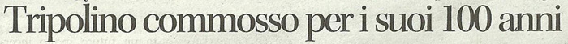

|
(Tripolino) 6/20 Nato a Casamaggiore, frazione di Castiglion del Lago (PG), l'8 marzo 1913 Morto a Pozzuolo frazione di Castiglion del Lago (PG), il 26 settembre 2014 all'età‚ di 101 anni e mezzo (leggi il sonetto) Fratello di Ezio Torrini 
1 Palio straordinario.    LA PAGINA DEI FESTEGGIAMENTI PER I SUOI 100 ANNI 
  
Fratello minore di Ezio Torrini, fantino che corse a Siena una sola volta e senza successo, il 16 agosto 1930 con la Pantera, Tripoli esordisce nella lizza senese l'anno dopo, il 2 luglio 1931 difendendo i colori del Nicchio. Il soprannome con cui viene segnato è Tripolino, diminutivo del proprio nome, Tripoli appunto, che i genitori scelsero in chiaro riferimento alla capitale della Libia. L'anno precedente alla nascita del fantino, infatti, l'Italia era uscita vittoriosa dalla guerra italo-turca, che aveva sancito la conquista della Tripolitania e della Cirenaica, strappate all'Impero Ottomano. L'esordio paliesco di Tripolino è meno fortunato, ma il fantino umbro, che monta la modesta Beppina, ben si distingue e viene chiamato dalla Civetta per il successivo Palio dell'Assunta. Con la portentosa Gobba, Tripolino parte in testa insieme all'Oca, ma paga la propria inesperienza di fronte al fantino di Fontebranda, Aldo Mantovani detto Bubbolo, che si impone per la quarta e ultima volta nella sua carriera. Poco male, in quanto la Civetta lo conferma per il successivo palio di luglio 1932. Il cavallo da montare è di nuovo velocissimo, Lampino, ma Tripolino si deve scontrare con la giornata di grazia di Ganascia e Gobba, il binomio dell'Onda, che vincono con il tempo record di 1'16". Il successo è comunque nell'aria: il 16 agosto 1932 il Nicchio richiama Tripolino e gli affida la mossa di un altro "bombolone", Ruello. La mossa è estenuante, per la presenza dell'Oca al settimo posto, dell'Onda al nono e della Torre, la nemica delle prime due, di rincorsa. Tripolino è sesto e rischia di vedersi compromessa la propria partenza, vanificando così la risaputa velocità‚ di Ruello. Fortunatamente il Nicchio è avvantaggiato dalle 3 alleate (Oca, Onda e Tartuca), quel giorno tutte in Piazza: i quattro rioni in quegli anni danno vita al "TONO" (dalle iniziali delle quattro alleate), un ferreo patto di alleanza con cui mettono in comune le proprie risorse per aiutarsi a vincere l'una dopo l'altra di Palio in Palio. In effetti Onda, Nicchio e Tartuca partono prime, ma ben presto tra le prime due, per quanto alleate, inizia un'accanita lotta: se infatti la contrada dei Pispini vuole vincere, quella di Malborghetto vuole centrare uno storico cappotto, già‚ riuscitole nel lontano 1779. Al secondo San Martino Tripolino prende la testa e controlla fino all'ultimo bandierino, quando può gioire della sua prima vittoria. Al palio di agosto dell'anno dopo, Tripolino si lega a quella che, insieme al Drago, sarà‚ la sua contrada storica, la Lupa. Nuovamente in groppa a Ruello, Tripolino sfiora il successo, ma viene preceduto dalla Tartuca, che con Ganascia sul mitico Folco (insieme a Panezio, barbero degli anni '70 e '80, il più vittorioso del XX secolo con 8 successi) centra un clamoroso cappotto. La sconfitta brucia ai lupaioli (anche a luglio la Tartuca aveva vinto dopo un serratissimo testa a testa con la Lupa), ma Tripolino è ormai entrato, per la sua tenacia e determinazione, nel cuore del popolo di Vallerozzi. Assente nel 1934, il fantino umbro viene richiamato dalla Lupa per il palio del 2 luglio 1935 ed è ancora una volta Ruello il barbero da montare. La carriera non si preannuncia come una delle più facili: sul tufo c'è anche Folco, il fortissimo barbero che in quel palio corre per il Nicchio, e soprattutto l'Istrice. I rapporti tra quest'ultima e la Lupa, da decenni solide alleate, si sono improvvisamente (e irrimediabilmente) incrinati a causa di un banale litigio per la collocazione di alcune bandiere in un angolo rivendicato da entrambe, e di lì a poco degenereranno in quell'accesa rivalità‚ che tutt'oggi separa i due rioni. Alla mossa sono proprio Lupa, Nicchio ed Istrice a scattare prime, ma clamorosamente la contrada di Camollia dà‚ un grosso aiuto alla Lupa. Nel tentativo di prendere la testa, infatti, il fantino istriciaolo, Pietrino, si scontra con quello del Nicchio, Bovino: i due iniziano in breve a nerbarsi, rallentandosi a vicenda e permettendo così alla Lupa di incrementare il proprio vantaggio. Quando Pietrino si libera dell'ostacolo del Nicchio, ormai il distacco dalla Lupa è incolmabile e Tripolino trionfa così per la seconda volta nella sua carriera. Il riscatto dell'Istrice è però fulmineo: il 16 agosto Pietrino e Tripolino vestono nuovamente le casacche di Camollia e Vallerozzi, ma stavolta la sorte assegna Ruello alla prima. L'Istrice può così vincere il palio, mentre la Lupa si piazza solo terza. Nel 1936 Tripolino corre per il Drago. A luglio non c'è però storia e la Giraffa si aggiudica il Palio dell'Impero. In effetti l'esito pare scontato, potendo la Giraffa contare sull'ormai inarrestabile Ruello. Dal canto suo il Drago corre con lo sconosciuto barbero Aquilino, che la sorte assegna alla contrada di Camporegio anche per il palio di agosto. Stavolta Ruello va in sorte alla Pantera, che crede di potersi affidare sull'aiuto dell'alleata Aquila. Invece le dirigenze fanno il grosso errore di chiamare due fantini tra cui infiamma un forte odio reciproco, Ganascia e Meloncino. Il primo, fantino dell'Aquila, ostacola duramente Meloncino, facendolo cadere e infrangendo i sogni di vittoria dei panterini. Per Tripolino e Aquilino la strada è sgombra e il Drago può festeggiare dopo 15 anni di attesa. A luglio 1937 Tripolino torna alla Lupa, in uno dei palii più convulsi di sempre. Il barbero da montare è Folco e la Lupa è di diritto una delle grandi favorite, insieme all'Onda con Ruello. Anche stavolta però ci sono di mezzo le alleanze contradaiole. La Lupa è all'epoca (con Drago, Aquila e Montone) membra della "Piccola Quadruplice", altro patto a quattro contrade, forse con minor capacità‚ economica del TONO ma egualmente efficace. La nonna di quegli anni, la Torre (a digiuno da 27 anni), si rivolge proprio alla Piccola Quadruplice per tornare alla vittoria, promettendo molti soldi a fantini e dirigenze. Per quanto la contrada di Salicotto abbia ricevuto in sorte la modesta cavalla Masina, gli accordi sembrano ormai conclusi e Aquila, Drago e Lupa (il Montone non corre) dovranno favorire la Torre nella carriera: specie la Lupa avrà‚ il compito di tener d'occhio l'Onda con Ruello, la nemica della Torre, decisa ad ostacolarne il ritorno alla vittoria. Ma clamorosamente la mattina del Palio tutto quanto salta: un diverbio tra alcuni dirigenti torraioli, probabilmente non a favore degli accordi fin lì stabiliti, fa crollare i patti tra le quattro contrade. Poco prima del Palio l'ignaro Tripolino viene avvisato di tirare a vincere, non ricevendo alcuna spiegazione. La mossa favorisce comunque la Torre di rincorsa, cui l'Aquila al nono posto lascia un ampio varco per entrare. La contrada di Salicotto prende subito la testa, ma il binomio lupaiolo è nettamente superiore: Tripolino si lancia all'inseguimento della battistrada e in breve prende il comando. I festeggiamenti per il quarto successo di Tripolino vengono però interrotti dagli inferociti torraioli, molti dei quali non erano a conoscenza della rottura dei patti, che invadono Vallerozzi e ingaggiano una furibonda rissa coi lupaioli, che comunque non dà‚ vita ad alcun rapporto di rivalità‚. Nonostante tutto, la classe di Tripolino è ormai chiara a tutti e l'anno successivo è il momento culminante della carriera del fantino umbro. A luglio viene richiamato dal Drago, che gli affida la monta di Folco. Dopo un giro dietro alla Tartuca con Ganascia su Stella, Tripolino passa la battistrada al secondo bandierino e non molla più il comando. Ad agosto corre invece per la Chiocciola, la quale si affida al fantino più in forma per evitare un esito che pare pressoché scontato: la vittoria della rivale Tartuca. La contrada di Castelvecchio ha infatti ricevuto in sorte Ruello e l'ha affidato al suo storico fantino Ganascia. Dal canto suo alla Chiocciola è toccato lo sconosciuto Sansano, che sulla carta pare non reggere il confronto con Ruello. Ma la maestria di Tripolino sarà‚ proverbiale in quella carriera: partito secondo dietro al Nicchio, Torrini spinge alla grande Sansano, riuscendo a prendere il comando al primo San Martino. La Tartuca resta invece ingabbiata nelle retrovie, non riuscendo a lanciarsi all'inseguimento della rivale. Tripolino vince così un Palio insperato per la grande gioia dei chiocciolini; dal canto loro i tartuchini non la perdonano a Ganascia, che viene "assediato" per ore nell'Entrone dall'irato popolo di Castelvecchio. Ma, inaspettatamente, il sesto trionfo per Tripolino sarà‚ anche l'ultimo della sua carriera a Siena. Del suo ci mette anche la seconda guerra mondiale, che impedisce lo svolgimento del palio per 5 anni. Quando il 2 luglio 1945 torna la terra in Piazza, Tripolino è ancora nel lotto dei fantini, ma subisce una delusione clamorosa. Chiamato dalla Giraffa, che gli affida la monta di Folco (cavallo 19enne, e quindi non più giovane, ma ancora fortissimo), Tripolino conduce tutta la carriera, quando la Lupa, con Renzino (alla sua prima e unica esperienza in Piazza) su Mughetto, lo passa con un'incredibile traiettoria esterna al terzo San Martino. Proprio con la Lupa, Tripolino chiude la sua carriera al Palio di Siena nello straordinario del 28 maggio 1950 (dedicato al V centenario della canonizzazione di San Bernardino da Siena), dedicandosi completamente all'altra manifestazione che lo ha reso celebre, la Giostra del Saracino di Arezzo, nella quale è in quel momento al culmine del successo. 
 
|